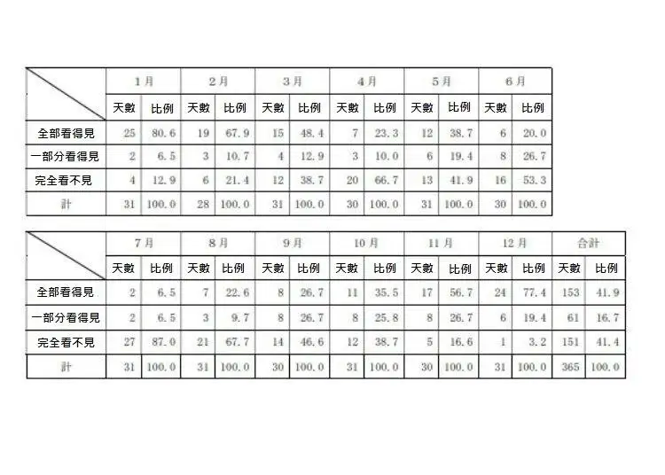

Inverse Fuji
preface
Before talking about how to see the inverse Fuji, I must tell everyone the best season to watch Mount Fuji. If you can’t even see the most basic Mount Fuji, how can you say about inverse Fuji?
See Mt.Fuji-Season
First of all, looking at Mt. Fuji is the same as looking at Alishan in Taiwan. You have to choose the season to see it. Yamanashi Prefecture once made statistics in 2019 to sort out which days you can clearly see Mt. Fuji every day of the year. It turned out that Autumn to winter is the best time to see Mount Fuji.

See Mt.Fuji-time
The so-called inverse Fuji means that the entire Mount Fuji is reflected on the calm lake, showing the opposite Mount Fuji. To take pictures of the inverse Fuji, it is recommended that the best time to take pictures of the inverse Fuji is in the early morning, and you need to cooperate with the days with no rain, no snow, and no wind to take pictures.

But if there is a slight breeze, it may not be possible to take pictures of the inverse Fuji. It is possible that your inverse Fuji is hazy like an oil painting.